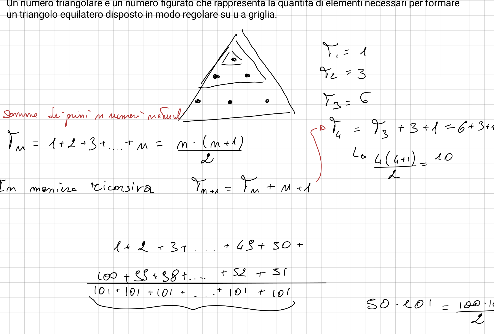
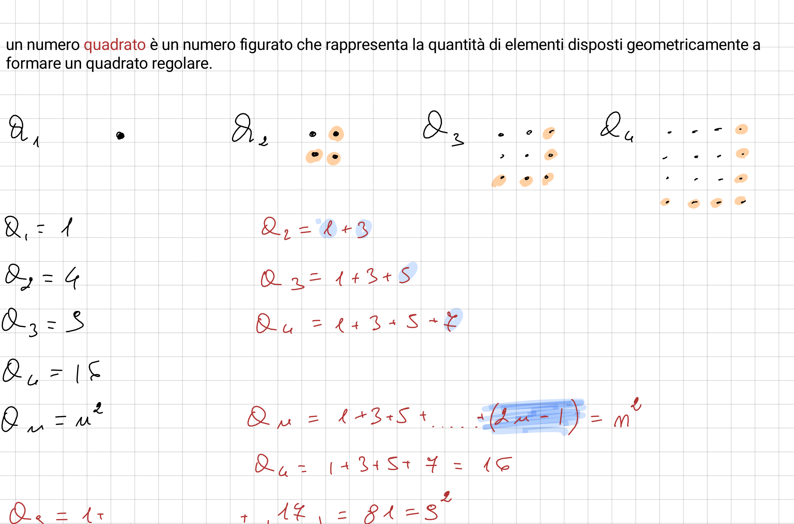
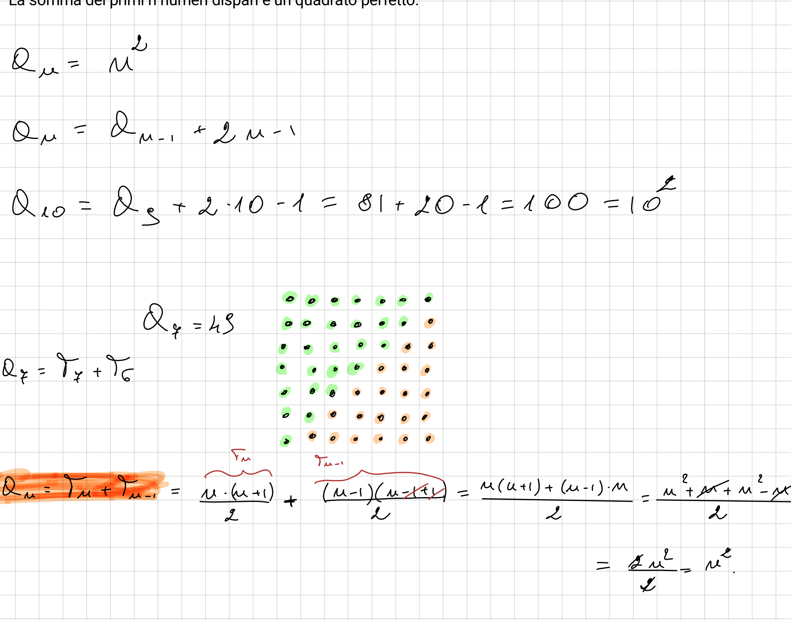
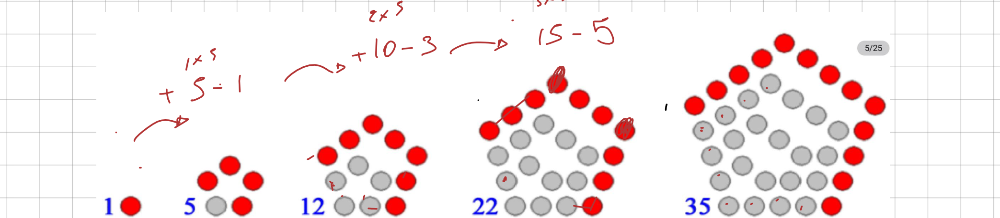
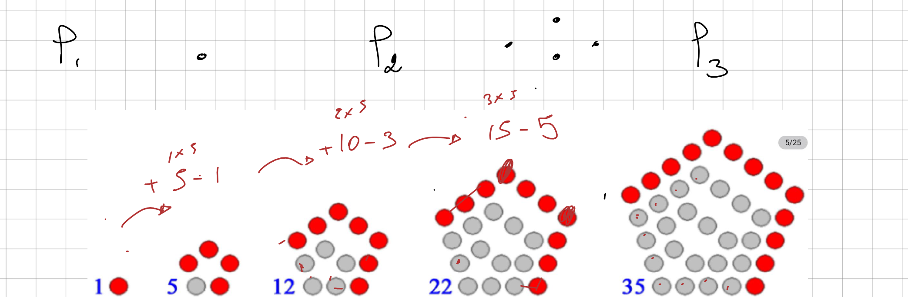
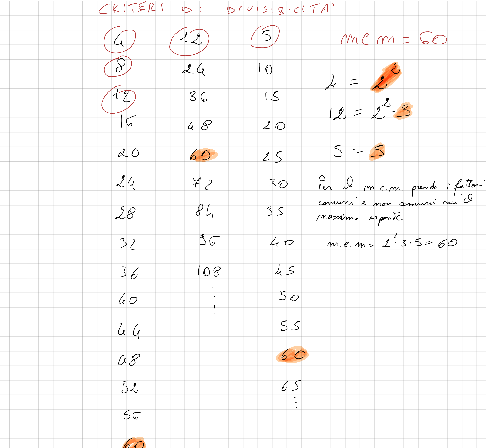
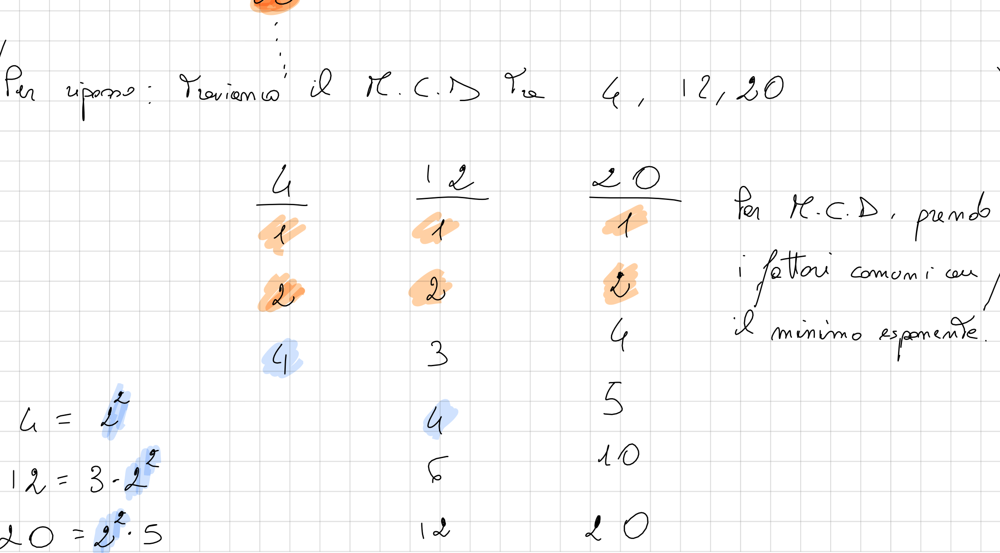

La costruzione dei sistemi numerici poggia sull'estensione progressiva degli insiemi algebrici per garantire la chiusura rispetto alle operazioni: $$\mathbb{N} \subset \mathbb{Z} \subset \mathbb{Q} \subset \mathbb{R} \subset \mathbb{C}$$
Ogni numero intero $n > 1$ si scompone in modo unico come prodotto di potenze di numeri primi distinti: $$n = p_1^{\alpha_1} p_2^{\alpha_2} \cdots p_k^{\alpha_k}$$
Somma di interi consecutivi (Tavola 1 del manoscritto):
Un numero naturale $T_n$ è triangolare se può essere disposto sotto forma di triangolo equilatero a reticolo discreto. La legge di ricorrenza fondamentale e la formula chiusa sono: $$T_{n+1} = T_n + (n+1), \quad T_1 = 1 \implies T_n = \sum_{k=1}^n k = \frac{n(n+1)}{2}$$ I primi termini calcolati sono: $T_1 = 1$, $T_2 = 3$, $T_3 = 6$, $T_4 = 10$, $T_5 = 15$, $T_6 = 21$, $T_7 = 28$.

Un numero $Q_n = n^2$ corrisponde a una matrice quadrata $n \times n$. Per il Teorema dello Gnomone Pitagorico, la crescita tra due quadrati successivi avviene aggiungendo una squadra angolare dispari di $2n-1$ elementi: $$Q_n = Q_{n-1} + (2n - 1) \implies Q_n = \sum_{k=1}^n (2k - 1) = 1 + 3 + 5 + \dots + (2n - 1) = n^2$$

Ogni quadrato $Q_n$ si scompone naturalmente, lungo la diagonale principale del reticolo, nella somma di due numeri triangolari consecutivi: $$Q_n = T_n + T_{n-1} = \frac{n(n+1)}{2} + \frac{(n-1)n}{2} = \frac{n(n+1+n-1)}{2} = \frac{n(2n)}{2} = n^2$$ Nel manoscritto, il docente e gli studenti hanno analizzato graficamente il caso per $n = 7$: $$Q_7 = 7^2 = 49 = T_7 + T_6 = 28 + 21$$

Un numero naturale $P_n$ rappresenta la quantità di elementi necessari a formare una sequenza di pentagoni regolari concentrici che condividono un vertice fisso comune. I primi termini calcolati sono: $$P_1 = 1, \quad P_2 = 5, \quad P_3 = 12, \quad P_4 = 22, \quad P_5 = 35$$


1. Legge di ricorrenza: $$P_1 = 1, \quad P_2 = P_1 + 4 = 5, \quad P_3 = P_2 + 4 + 3 = 12, \quad P_4 = P_3 + 4 + 3 + 3 = 22$$ $$P_n = P_{n-1} + 3n - 2$$
2. Dimostrazione chiusa per sottrazione dei vertici condivisi (Tavola 4):
Esprimendo la crescita come somma degli strati concentrici:
$$1 + \underbrace{(5 - 1)}_{n=2} + \underbrace{(10 - 3)}_{n=3} + \underbrace{(15 - 5)}_{n=4} + \dots$$
$$P_n = 1 + 5 \sum_{k=1}^{n-1} k - (n-1)^2 = 1 + \frac{5n(n-1)}{2} - (n^2 - 2n + 1)$$
$$P_n = \frac{5n^2 - 5n - 2(n^2 - 2n + 1) + 2}{2} = \frac{5n^2 - 5n - 2n^2 + 4n - 2 + 2}{2} = \frac{3n^2 - n}{2} = \frac{n(3n - 1)}{2}$$
3. Verifica numerica: $$P_1 = \frac{1(2)}{2} = 1, \quad P_2 = \frac{2(5)}{2} = 5, \quad P_3 = \frac{3(8)}{2} = 12, \quad P_4 = \frac{4(11)}{2} = 22, \quad P_5 = \frac{5(14)}{2} = 35$$
Isolando in $N = 10a + u$ l'unità $u$ dalla decina troncata $a$, definiamo $N' = a + Ku$. Se $10K \equiv 1 \pmod p$, allora $p \mid N \iff p \mid (a + Ku)$.
| Divisore $p$ | Moltiplicatore $K$ | Relazione Modulare | Formula Operativa | Esempio dal Manoscritto (Tavola 1) |
|---|---|---|---|---|
| 7 | $-2$ ($+5$) | $10(-2) = -20 \equiv 1 \pmod 7$ | $a - 2u$ | $91 \to 9 - 2(1) = 7$ (divisibile) |
| 13 | $+4$ | $10(+4) = 40 \equiv 1 \pmod{13}$ | $a + 4u$ | $91 \to 9 + 4(1) = 13$ (divisibile) |
| 17 | $-5$ ($+12$) | $10(-5) = -50 \equiv 1 \pmod{17}$ | $a - 5u$ | $221 \to 22 - 5(1) = 17$ (divisibile) |
| 19 | $+2$ | $10(+2) = 20 \equiv 1 \pmod{19}$ | $a + 2u$ | $57 \to 5 + 2(7) = 19$ (divisibile) |
| 23 | $+7$ | $10(+7) = 70 \equiv 1 \pmod{23}$ | $a + 7u$ | $69 \to 6 + 7(9) = 69 = 3 \cdot 23$ |
| 29 | $+3$ | $10(+3) = 30 \equiv 1 \pmod{29}$ | $a + 3u$ | $87 \to 8 + 3(7) = 29$ (divisibile) |
| 31 | $-3$ | $10(-3) = -30 \equiv 1 \pmod{31}$ | $a - 3u$ | $93 \to 9 - 3(3) = 0$ (divisibile) |
| 41 | $-4$ | $10(-4) = -40 \equiv 1 \pmod{41}$ | $a - 4u$ | $123 \to 12 - 4(3) = 0$ (divisibile) |
Dalla Tavola 6 del manoscritto, indagine a due metodi: enumerazione insiemistica tabulare vs scomposizione analitica in fattori primi.


Il rapporto euclideo tra circonferenza e diametro $\pi = C/d \approx 3{,}14159265\dots$ è un numero irrazionale: circonferenza e diametro sono grandezze tra loro incommensurabili.
«Ave o Roma o madre gagliarda di latine virtù,
che tanto luminoso splendore prodiga spargesti con la tua saggezza.»
| Fonte Storica | Frazione $\frac{p}{q}$ | Decimale | Errore Assoluto | Errore % |
|---|---|---|---|---|
| Babilonia antica (XVIII a.C.) | $\frac{25}{8}$ | $3{,}125000\dots$ | $-1{,}66 \cdot 10^{-2}$ | $-0{,}53\%$ |
| Antico Egitto (Papiro Rhind) | $\frac{256}{81}$ | $3{,}160494\dots$ | $+1{,}89 \cdot 10^{-2}$ | $+0{,}60\%$ |
| Archimede (III a.C.) | $\frac{22}{7}$ | $3{,}142857\dots$ | $+1{,}26 \cdot 10^{-3}$ | $+0{,}04\%$ |
| Zu Chongzhi (V d.C.) | $\frac{355}{113}$ | $3{,}14159292\dots$ | $+2{,}67 \cdot 10^{-7}$ | $+0{,}0000085\%$ |
| Valore Reale Esatto | $\pi$ | $3{,}14159265\dots$ | $0$ | 0% |